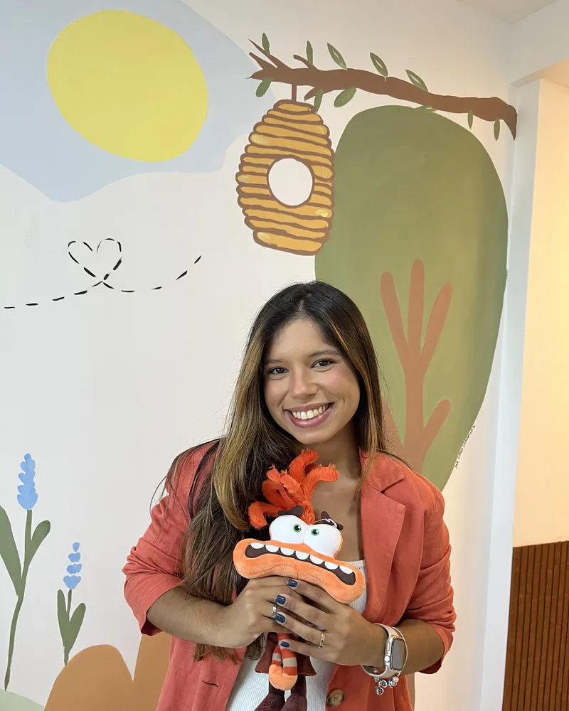

Sou psicóloga infantojuvenil, com atuação voltada ao acompanhamento de crianças e adolescentes típicos e neuroatípicos, bem como ao suporte às suas famílias. Meu trabalho é fundamentado na Terapia Cognitivo-Comportamental (TCC) e na Análise do Comportamento Aplicada (ABA), abordagens baseadas em evidências científicas e amplamente reconhecidas no campo do neurodesenvolvimento infantil.
Minha prática é pautada no respeito à singularidade de cada criança, no fortalecimento de vínculos e na construção de intervenções individualizadas, sempre considerando o desenvolvimento global, emocional e social. O objetivo do acompanhamento terapêutico é promover autonomia, bem-estar e qualidade de vida, tanto para a criança quanto para sua família.

"Amo atender meus pequenos e adolescentes. Não troco por nada! Cada sessão é uma oportunidade de fazer diferença na vida de uma criança e sua família."
— Jessica Costa PsiAvaliação, diagnóstico e intervenção especializada usando ABA. Trabalho com desenvolvimento de habilidades sociais, comunicação e autonomia.
Acompanhamento de crianças com TDAH, dislexia e outros transtornos do neurodesenvolvimento com estratégias personalizadas.
Regulação emocional, manejo de ansiedade, desenvolvimento de autoestima e habilidades socioemocionais.
Psicoeducação para pais e cuidadores, estratégias de parentalidade positiva e compreensão do desenvolvimento infantil.
Para mim, "crianças não precisam apenas de correção, mas de conexão". Minha prática é fundamentada em estabelecer vínculos seguros antes de trabalhar mudanças comportamentais.
Estabelecer vínculos seguros e genuínos como base para qualquer intervenção terapêutica.
Compreender e respeitar cada fase do desenvolvimento infantil e suas particularidades.
Envolver e educar as famílias no processo terapêutico com orientações práticas e acolhimento.
Promover aceitação e compreensão das neurodivergências na sociedade.
Ensinar crianças e famílias a identificar, nomear e regular emoções de forma saudável.
Utilizar apenas métodos validados cientificamente, garantindo eficácia e segurança.
Oferecer acompanhamento psicológico especializado e humanizado para crianças e adolescentes neurodivergentes, promovendo desenvolvimento emocional saudável através de métodos baseados em evidências científicas e uma abordagem que prioriza a conexão antes da correção.
Ser referência em psicologia infanto-juvenil com foco em neurodivergências, contribuindo para uma sociedade mais inclusiva e consciente sobre as particularidades do desenvolvimento infantil.
Atualização constante através de cursos, workshops e eventos científicos sobre TEA, TDAH e outros transtornos do neurodesenvolvimento.
Terapia Cognitivo-Comportamental adaptada para crianças e adolescentes, com técnicas lúdicas e abordagem baseada em evidências.
Metodologia gold standard para intervenção em TEA, focada em desenvolvimento de habilidades funcionais e análise comportamental.
Avaliação neuropsicológica e compreensão aprofundada do funcionamento cerebral em diferentes fases do desenvolvimento infantil.
Formação completa em Psicologia com foco em desenvolvimento humano e práticas clínicas.
Consultório particular com ambiente acolhedor e lúdico, preparado especialmente para crianças.
Recreio - Rio de Janeiro, RJ
Instituto especializado em neurodivergências.
Agende uma consulta e descubra como posso ajudar sua família a enfrentar os desafios do desenvolvimento infantil com acolhimento e ciência.
Agende sua primeira consulta ou avaliação.